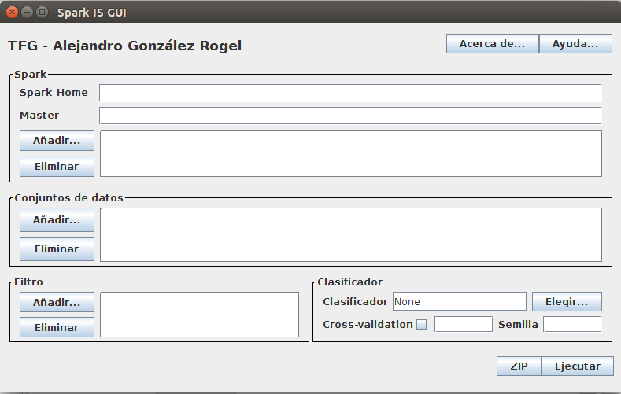
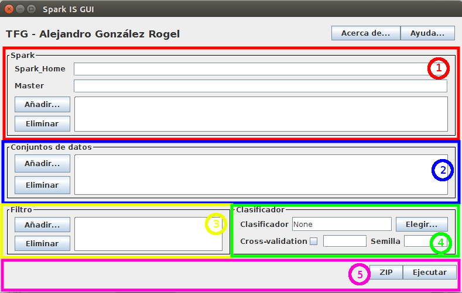
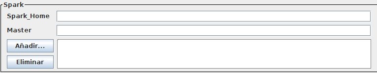
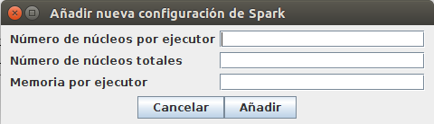
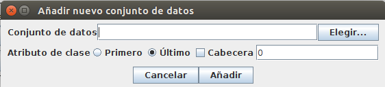
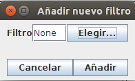
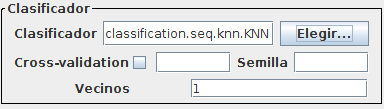
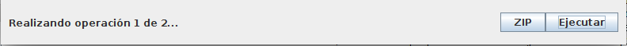
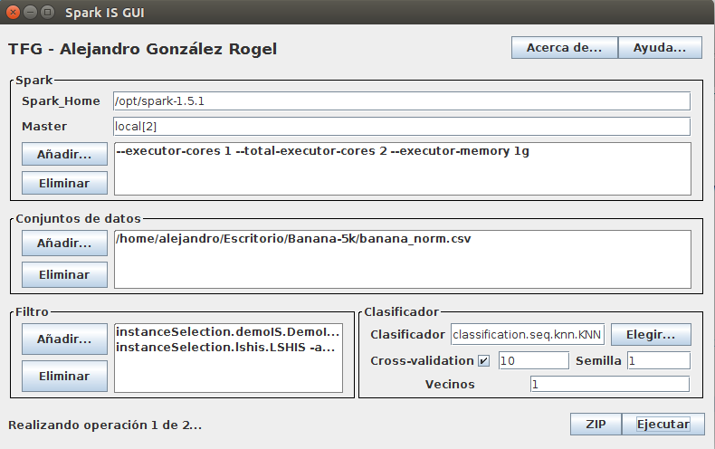

Ayuda para el correcto uso de la interfaz gráfica
Índice
- Introducción
- Componentes de la interfaz
- Panel de Spark
- Panel del conjunto de datos
- Panel del filtro
- Panel del clasificador
- Menú inferior
- Ejemplo
- Errores frecuentes
Introducción
A lo largo del siguiente documento se presentará una descripción
detallada por cada uno de los paneles y diálogos que ofrece esta
interfaz, de manera que se consiga entender la labor de cada uno de
sus componentes y esto permita la fácil configuración de las tareas.
La correcta ejecución de la aplicación
supone que se asigne un valor a cada uno de los campos con los que
cuenta la interfaz, a excepción de aquel dedicado a la validación
cruzada. Es importante, por lo tanto, conocer cuál es la utilidad de
cada uno de ellos.

Componentes de la interfaz
Podemos identificar diferentes secciones importantes dentro de
la propia interfaz:

- Panel de Spark: Nos permitirá seleccionar una o varias
opciones de configuración para iniciar nuestra tarea en Spark.
- Panel del conjunto de datos: Posibilita la acción de
seleccionar uno o más conjuntos de datos para analizar, indicando
algunas peculiaridades para su lectura si es preciso (atributo de
clase como primer atributo, cabecera del fichero)
- Panel del filtro: Permite seleccionar uno o varios
algoritmos de filtrado o selección de instancias.
- Panel del clasificador: Ofrece la posibilidad de
seleccionar un clasificador, además de las opciones de clasificación
ligadas con la validación cruzada.
- Menú inferior: Contiene los botones que pondrán en
funcionamiento las acciones de la aplicación.
Panel de Spark

Se aprecian dos modelos de campos:
- Campos de tipo texto: Definen características que van
a ser comunes a todas las ejecuciones que realicemos durante nuestra
experimentación. Estas son:
- Spark_Home: Directorio donde se encuentra la
instalación de Apache Spark en la máquina final donde se ejecutarán
los algoritmos de minería. Este valor será obtenido directamente si
nuestro sistema cuenta con la variable $SPARK_HOME
.
- Master: La dirección URL donde se encuentra el
maestro (master) de nuestra red. En modo Standalone dicha URL tiene
una apariencia tal que spark://HOST:PORT. Para correr en
modo local podemos hacerlo indicarlo escribiendo local[n],
donde n indica el número de hilos de ejecución que deseamos
asignar.
- Listado de configuraciones:Proporciona la posibilidad
de añadir una o varias configuraciones de ejecución en cuanto a la
configuración de Spark se refiere. Podemos distinguir los siguientes
campos:
- Número de núcleos por ejecutor: Número de hilos
asignados a cada ejecutor (proceso/s de ejecución dentro de un nodo
trabajador).
- Número de núcleos totales: Número de núcleos totales
a usar durante la ejecución entre todos los ejecutores.
- Memoria por ejecutor: Capacidad de memoria asignada
a cada ejecutor. Debe indicarse la unidad de medida que estamos
utilizando. Inmediatamente después del número deberemos escribir
'g' para indicar gibibytes, o 'm' para indicar mebibytes. Además,
es necesario recordar que cada ejecutor debería contar con un
mínimo de 1 gibibyte de memoria.

Panel del conjunto de datos
Cuenta con una única lista y una serie de botones que permiten
añadir/eliminar los conjuntos de datos seleccionados para el
experimento.
En lo que respecta a la ventana de selección de conjuntos de
datos (obtenida cuando hacemos clic sobre "Añadir...") podemos
distinguir los siguientes elementos:
- Sección de selección de conjunto de datos: Consta de
un campo de texto y de un botón que lanza una herramienta para poder
seleccionar de manera más sencilla el conjunto de datos que deseamos.
Una vez seleccionado el conjunto de datos, el campo de texto mostrará
la ruta al fichero.
- Sección de configuración de opciones: Por defecto, el
programa asume que el atributo de clase es el último de la lista de
atributos de las instancias y que el conjunto de datos no tiene una
cabecera. Si alguno de estos supuestos no se cumpliese, debemos
indicarlo aquí. Recordar que no se tendrán en cuenta las lineas de
cabecera si el botón con el texto "Cabecera" no ha sido seleccionado.

Panel del filtro
Está compuesto de una única lista que permite añadir o eliminar
elementos gracias a los botones anexos.
El diálogo que se muestra tras pulsar el botón "Añadir..."
únicamente permite seleccionar un filtro de entre un número de
opciones.

La selección de cualquier algoritmo ocasionará que el anterior
diálogo se llene con nuevas opciones, las cuales dependerán del
algoritmo seleccionado. Todas estas nuevas opciones deberían mostrar
un texto descriptivo de su función si mantenemos el ratón sobre el
campo de texto.

Panel del clasificador
Este panel cuenta con una función múltiple:
- Selección de un clasificador: Al igual que en el panel
del filtro, se permite seleccionar, mediante el botón "Elegir...", un
clasificador de entre la lista de posibles. Esto refrescará la
ventana principal dejando visibles nuevas opciones para la
configuración del algoritmo.
- Selección de validación cruzada: Podemos marcar o
desmarcar una casilla junto al nombre "Cross-Validation" para indicar
que queremos realizar una validación cruzada en nuestros
experimentos. Los campos siguientes permiten seleccionar el número de
"folds" o veces que repetiremos la validación cruzada y una semilla
aleatoria. Si la casilla junto al texto "Cross-Validation" no está
marcada, el resto de campos son ignorados.

Menú inferior

Está compuesto de tres componentes:
- Texto informativo: Aunque no se muestra nada mientras
no se esté ejecutando ningún comando desde la interfaz, permite
visualizar la operación en curso si ya hemos pulsado alguno de los
dos botones del menú inferior.
- Botón Zip: Genera un archivo .zip con un fichero .sh
que contiene las órdenes para realizar una batería de ejecuciones de
acuerdo a los datos rellenados en la interfaz. Además, también
empaqueta todos los conjuntos de datos que pudiesen necesitarse para
la ejecución de dicha batería de datos. Es una opción pensada para
ejecutar los algoritmos en una máquina diferente de la que está
ejecutando la interfaz.
- Botón Ejecutar: Comienza el lanzamiento de la batería
de ejecuciones directamente desde la interfaz. En la parte izquierda
inferior de la pantalla podremos ver el estado del proceso, que, por
lo general, va a requerir algo de tiempo realizar las ejecuciones.
Resultados
Las carpetas resultantes de aplicar cualquiera de las dos
ejecuciones disponibles (ejecutar o comprimir) se encontrarán en la
ruta desde donde el usuario invocó al programa si lo hizo por linea de
comandos. Si se abrió el programa mediante una operación de doble
clic, los resultados aparecerán en el directorio "HOME" del usuario.
Ejemplo
A continuación se muestra una el estado de la interfaz tras
generar una batería de dos ejecuciones (misma configuración de Spark y
mismo conjunto de datos pero diferente filtro)

Un aspecto a mencionar aquí es cómo calcular el número de
ejecuciones de una batería. La respuesta es sencilla: la interfaz
realizará tantas ejecuciones como combinaciones posibles pueda formar
entre las diferentes configuraciones que el usuario ha introducido.
Así, por ejemplo, si el usuario ha introducido dos configuraciones
para Spark, dos conjuntos de datos y dos filtros diferentes, se podrán
generar hasta ocho combinaciones posibles de elementos (pues el
clasificador siempre es el mismo para todas las ejecuciones).
Errores frecuentes
Es posible que al realizar algunos experimentos nos encontremos
con algún problema al intentar lanzarlos. A continuación,
mencionaremos cuáles son las causas más probables por las que esto
ocurre.
En primer lugar, vale la pena recordar que, para que una
ejecución se produzca de manera satisfactoria, todos los paneles de la
interfaz han de contar con, al menos, una configuración.
En segundo lugar, es necesario recordar que la posesión de esta
aplicación no implica tener instalada la tecnología para poder
realizar las ejecuciones (Spark). Algunas distribuciones de esta
aplicación no cuentan con el material necesario para realizar
lanzamientos, solo para definirlos y crear un fichero .zip
También es importante mencionar que, para que una ejecución pueda
realizarse, la distribución pertinente de nuestra aplicación ha de
situarse en la carpeta $SPARK_HOME/lib. De lo contrario, la
interfaz podría mostrar un mensaje indicando que es imposible
localizar el archivo.
Si cumplimos los requisitos anteriores, hay que considerar que
exista un error al configurar alguno de los componentes del
experimento. Compruebe que absolutamente todos los campos de las
diferentes configuraciones tienen algún valor.